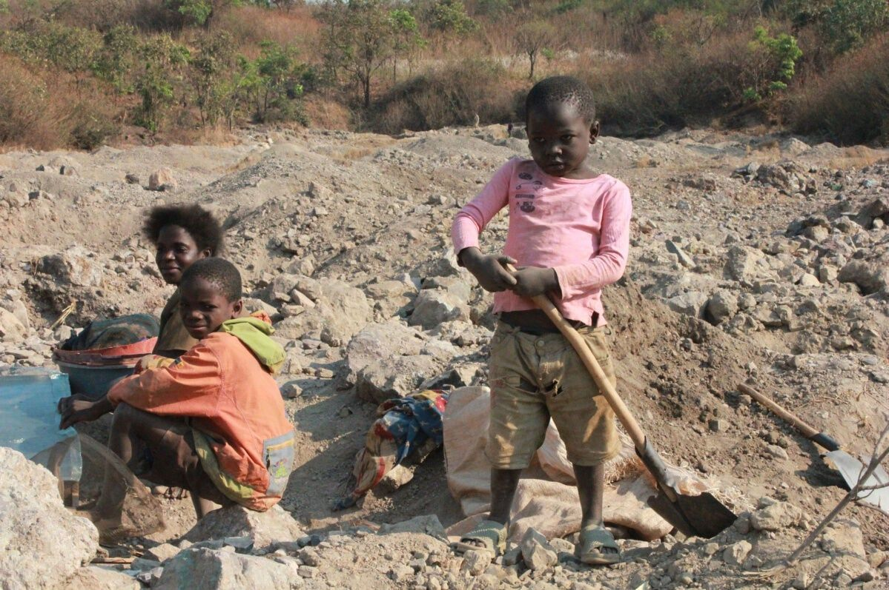
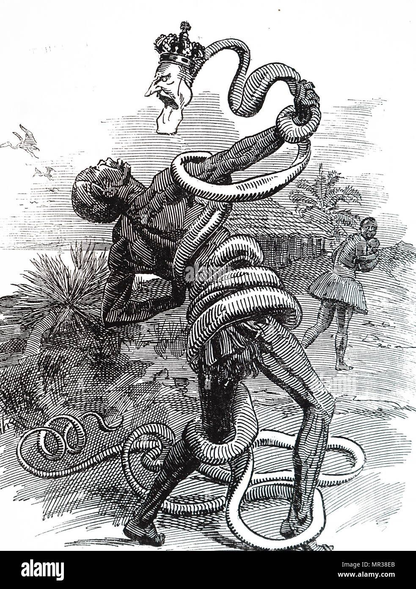
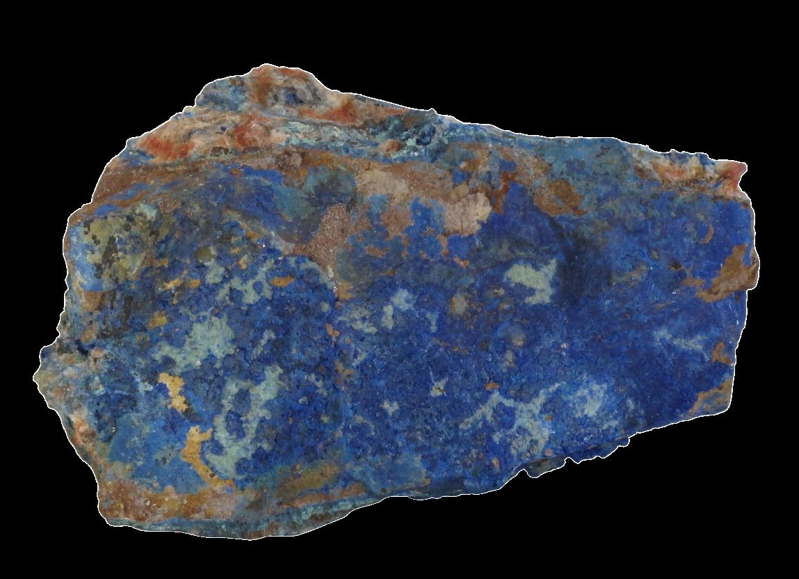
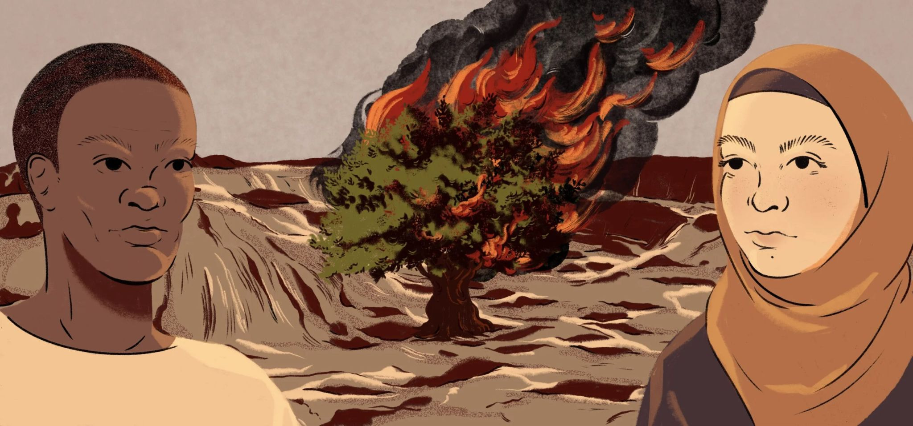
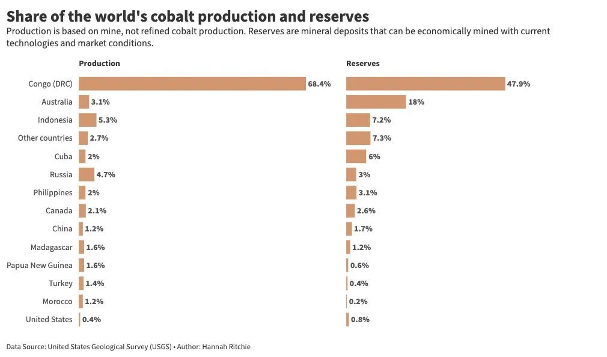
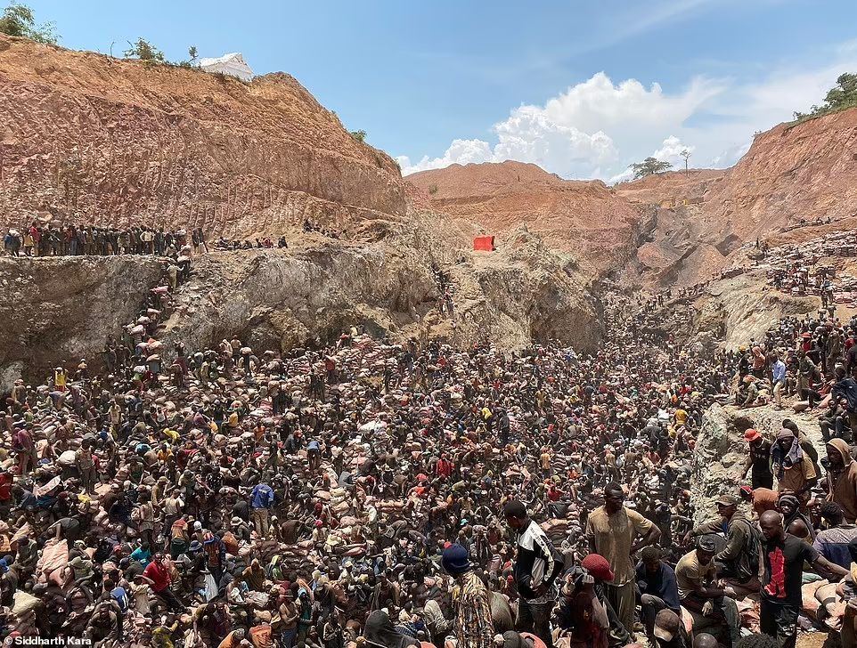
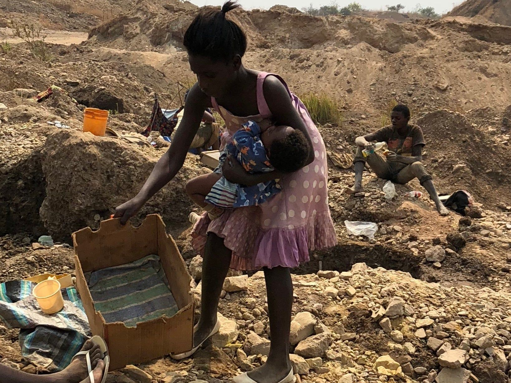
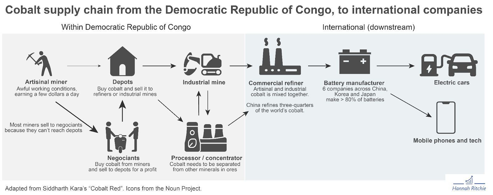
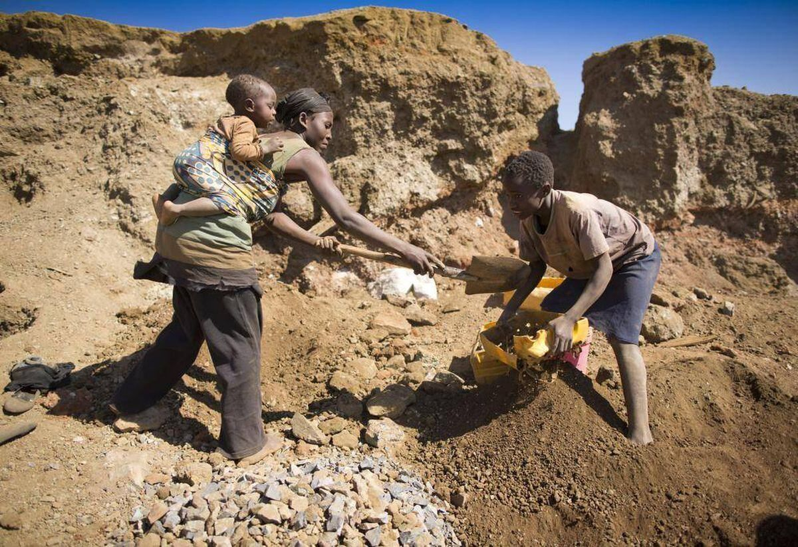
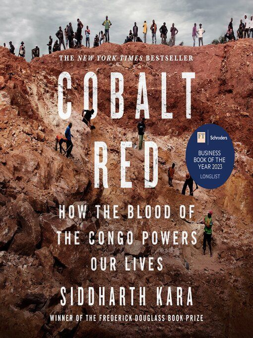

The Hidden Cost of Cobalt
Content warning: this post discusses child labour, violence, sexual violence, and colonial atrocities. It is not graphic, but the subject is heavy. If you want the short version: the batteries in our phones, laptops, and electric vehicles are largely made of cobalt, most of the world’s cobalt comes from the Democratic Republic of the Congo, and a significant portion of it is mined by hand, often by children, under conditions that should have never existed, and people assume do not in this day and age. Slavery is real and alive, and we all reap the rewards of these atrocities.

A while ago I put together a small presentation called “The Hidden Cost of Cobalt” for a couple of friends. It was uncomfortable to research, uncomfortable to make, and uncomfortable to give. This post is the long-form version: less PowerPoint, more reflection, same uncomfortable facts.
Quick jargon guide
- Cobalt: a hard, silvery-blue chemical element (Co, atomic number 27). It is a critical component of the cathodes in most lithium-ion batteries, where it stabilises the chemistry and improves energy density.
- DRC: the Democratic Republic of the Congo, in central Africa. Not to be confused with the Republic of the Congo (a different, smaller country to its west). The DRC supplies over 60% of the world’s cobalt.
- Artisanal mining: small-scale mining, usually by hand, by individuals or small groups, often without formal legal protection, safety equipment, or oversight. The opposite of industrial mining.
- Supply chain: the chain of companies and processes a raw material passes through between the ground and the finished product. The cobalt supply chain is famously opaque, which is part of the problem.
Why I cared enough to write a slide deck
It is strange that I even need to write this section. We all know these companies do shady things, and many of us choose willful ignorance while doomscrolling TikTok instead of confronting uncomfortable truths. You can decide this is too big for one person, or keep reading and make changes to your place in this system. In history class, many of us thought, "I would never stand for that." In practice, most people tolerate it as long as it is not on their front doorstep. The pattern is simple: when the harm is far away and we benefit, people look away.
I think, outside of the more meta-perspective, I sat down to make the original presentation for four reasons, and they have not gone away in the time since.
Humanism. The exploitation of workers in the cobalt mines, including children as young as five, and the routine exposure of miners to hazardous conditions without adequate protection, reflects a profound disregard for human dignity. There is no acceptable framing of this. There is no sensible cost-benefit analysis in which a five-year-old crawling through a tunnel for a few cents a day is the price of a slimmer phone.
Racial justice. The pattern of wealth being extracted from African communities at the cost of African lives is not a coincidence and is not new. King Leopold II of Belgium ran the Congo Free State as a private extraction operation in the late 19th century. The Belgian colonial state continued in the same vein into the mid-20th century. The names of the companies and the names of the resources have changed; the geography of who benefits and who pays has not. To talk about cobalt without talking about that history is to talk about it dishonestly. Contemporary analyses describe today’s mineral economy as a continuation of that concessionary model: external actors capture profit while Congolese communities absorb instability and poverty.[1][5][3]
That continuity is not just rhetorical. Under the Free State, concession companies and the Force Publique enforced extraction through terror, hostage-taking, and collective punishment. Later administrations changed legal structures and international branding, but not the underlying economic design: raw materials leave, value is captured elsewhere, and local communities are left with violence, weak institutions, and long-run underdevelopment. The current cobalt economy sits on top of that inherited architecture rather than breaking from it.[1][5][3]


Environmentalism. Irresponsible mining, particularly the unregulated artisanal kind, causes water pollution, deforestation, soil contamination from heavy metals, and the destruction of local ecosystems. The communities living near mining areas inherit the damage. This has been described as a national toxicological crisis in the DRC context.[3] The clean-energy framing of cobalt (“we need it for batteries, batteries are good for the climate”) conveniently ignores that the localised environmental devastation is real, immediate, and falls on people who are not the ones driving Teslas.
- Pollution: Mining activity contaminates water, soil, and ambient air with trace metals, with children in exposed communities often showing higher contamination than adults.[4]
- Ecosystem loss: Large-scale and artisanal extraction are associated with deforestation, soil erosion, and stream destruction, undermining local food security.[4][3]
- The climate paradox: Decarbonization benefits in wealthy countries can be built on localized environmental sacrifice in the DRC.[7]

Feminism. Mining communities in the DRC report widespread sexual violence, structural discrimination against women and girls, and a near-total absence of safe, dignified employment options. Research on extractive wartime economies also documents sexual violence as a tactical weapon used to destabilize communities near resource corridors.[6] Women are frequently excluded from safer formal roles, which can increase vulnerability to coercion, trafficking, and exploitation.[6][7] The gendered impact is a layer on top of all the other harms, not a separate niche issue. If your ethical analysis of the cobalt supply chain does not include the women living next to the pit, your analysis is incomplete.
What cobalt actually is, and why we suddenly need so much of it
Cobalt has been useful to humans for a long time. It gives medieval stained glass and porcelain its blue. It alloys with iron and nickel to produce superalloys that hold their shape in jet engines and gas turbines, where ordinary steel would deform or corrode. That part of the cobalt story is centuries old and, on its own, not where the moral pressure sits.
The pressure comes from the second use. Cobalt is a central ingredient in the cathode of most lithium-ion batteries. It is what makes a modern battery dense enough to power a laptop for a working day, a phone for an evening, an electric car for a few hundred miles. Demand for cobalt was relatively stable for most of the 20th century. Then smartphones happened. Then electric vehicles happened. The curve went vertical.
And the curve went vertical right onto the DRC. The country sits on the largest known reserves of cobalt in the world. Battery-related cobalt demand increased roughly 26-fold between 2000 and 2020, and by 2020 the DRC supplied about 70% of global cobalt output.[2] A non-trivial slice comes from artisanal mines rather than industrial ones, but that share has shifted over time: estimates place ASM near 40–53% around 2008 and closer to 9–11% by 2020 as industrial capacity expanded.[2]

Why mining by hand, in 2026
This is the question I get most when I talk about this. Why isn’t there a big, regulated, mechanised mine doing all of it safely?
Part of the answer is that there are large industrial mines in the DRC, operated by multinational companies, and they do produce most of the cobalt by volume. But around the edges of those industrial concessions, and on land that the formal sector does not touch, hundreds of thousands of people dig by hand. They do it because there are no other jobs. They do it because the soil is rich enough that a single person with a shovel and a bag can produce something that has cash value at the end of a day. They do it because the alternative is no income at all.


Artisanal mining in the DRC is not a quaint craft tradition. It is people, including children, digging tunnels that collapse, washing ore in contaminated water, breathing in cobalt dust that gives them “hard metal lung disease,” and selling their day’s output to middlemen who sell it on into a supply chain that is deliberately murky. The hand-dug cobalt and the industrially-mined cobalt converge upstream, get processed together, and become indistinguishable by the time they reach a battery factory in Asia or a finished device in your pocket.

That is the structural problem. There is no completely clean version of the supply chain you can opt into by buying the “ethical” phone. The cobalt is mixed, so even well-intentioned consumers are implicated. The problem doesn't lie with using phones, however, it's with us putting up with companies that profit from this system.
The unethical checklist
When I made the slides, I tried to enumerate the harms rather than gesture at them. It helped me, so here it is in full:
- Child labour. UNICEF has estimated tens of thousands of children working in DRC cobalt mining. The BBC and others have documented children as young as five. This is not a marginal or anecdotal phenomenon; it is structural.
- Worker exploitation. Artisanal miners are paid by weight, with no contracts, no protections, and no recourse. Daily earnings are often a few dollars at most.
- Health risks. Tunnel collapses, chronic respiratory disease from cobalt and uranium dust, untreated injuries, and birth defects in nearby communities linked to heavy-metal exposure.
- Corruption. Cobalt revenues frequently do not reach the public services they nominally fund. The flow from pit to port to processor is well-documented as a site of bribery and informal payments.
- Lack of infrastructure. Roads, schools, clinics, and clean water in mining regions are often worse than in non-mining regions, despite (or because of) the volume of value being extracted.
- Gender and sexual violence. Documented widely in mining areas, both inside the mining workforce and in the communities surrounding it.
- Concentrated profit. The economic value of cobalt does not accrue to the people who dig it. It accrues, in ascending order, to local middlemen, processing companies, battery manufacturers, device manufacturers, and the shareholders of the companies whose logos are on the back of your devices.
Reading that list back, it is tempting to feel either paralysed or righteously angry, but I think I mostly feel powerless. I own a smartphone, I own a computer, I will probably own an EV one day, and I don't know how much of a choice I actually have in these things. I need a phone to log into work, or to enter my gym, or stay in contact with my family abroad. I use a computer for my job, every day, and even writing this post. The question is not whether I am implicated, though, it's what to do from inside that implication.

I already wrote about this once
If you read my post on the ethics of LLM use, you will have seen me complain about the “cobalt hypocrisy” in passing: the idea that people who are extremely online about the environmental cost of AI often have nothing to say about the supply-chain cost of the hardware AI runs on. This post is, in a way, the long version of that throwaway line. The hardware is not a neutral substrate. The hardware has a history and pretending the moral conversation begins when the GPU starts running is a convenient way to feel ethical without ever having to look at the rock the GPU was built from, all the way back in the Congo.
Same for everything else, of course. Same for the EV that I will absolutely tell people is better for the planet. Same for the wind turbine. Same for the solar inverter. The clean-energy transition runs on cobalt, lithium, nickel, copper, and rare earths, and every one of those minerals has a supply chain that, if you trace it back far enough, sits on top of someone’s land and was extracted with the life force from somebody’s lungs.
What can we actually do
The “what can we do” slide is always the hardest one in any presentation about systemic harm. Individual consumer action is not a solution to a structural problem. But individual consumer action is also not nothing, and the alternative of doing nothing and feeling bad is worse than the alternative.
Here is what I tell myself, and what I told the friends I gave the slides to.
1. Buy less, and buy used. The single most effective intervention an individual can make is to slow down the upgrade cycle. Every phone, laptop, or EV that gets used for an extra two years is roughly two years of cobalt demand that does not need to be sourced. Second-hand devices have already paid their cobalt debt; buying them refuses to add a fresh one. Repair your current phone, replace the battery if you can, or buy certified refurbished devices through vendors such as Back Market or Refurbed instead of defaulting to brand-new hardware.
2. Push for recycled and reduced-cobalt chemistries and support the right to repair. A meaningful fraction of cobalt could come from recycled batteries rather than from new mining, if the recycling infrastructure existed at scale. Battery chemistries with reduced or zero cobalt (LFP, sodium-ion, various nickel-rich variants) are real and getting better. As a consumer this means asking, when you do buy, what the battery chemistry is, and as a citizen this means supporting policy that funds recycling, standardisation, and right-to-repair legislation that keeps devices in use longer.
3. Recycle your old electronics properly. Lithium-ion batteries can be recycled to recover cobalt and other useful materials. Send old devices to a certified e-waste recycler rather than leaving them in a drawer or sending them to landfill. The most ethical cobalt is cobalt that does not need to be mined; the second most ethical cobalt is cobalt that was mined once and recovered twice.
4. Boycotting is powerful. A full boycott of cobalt-containing devices is difficult but not unrealistic; but the miners do still need to eat and survive, just not that income on those terms. Targeted pressure on specific companies to publish supply-chain audits, to fund safer artisanal mining cooperatives, and to commit to traceability is something that has moved the needle in other commodities (cocoa, palm oil, conflict diamonds) and could move it here, and boycotting might be a way towards that.
5. Learn, and then keep learning. If you want the depth I cannot give you in a blog post, read Siddharth Kara’s book Cobalt Red. It is the work I leaned on most heavily for the slides, and it is the most direct, sourced, on-the-ground account of artisanal cobalt mining I know of.
6. Use whatever privilege you have to amplify. This is the line from the original presentation that I've kept thinking about. The miners cannot tweet about their conditions. They cannot post on Instagram. They cannot lobby US or EU politicians. They cannot raise funds for NGOs that work in their region. We can. The asymmetry between what they can do and what we can do is exactly the privilege the situation hands us, and refusing to use it is its own kind of complicity. Use your voice.
7. Talk to your people. Not in a lecturing way. Not in a viral-tweet way. In the “hey, I learned something uncomfortable, do you want me to send you the source” way. Most of the people I have shared the slides with had never heard the word “cobalt” in this context before.

If you want to turn that into something more concrete than vague good intentions, here are some organizations and resources worth knowing.
- Good Shepherd International Foundation (GSIF). GSIF operates the Bon Pasteur program in Kolwezi, providing education, healthcare, and agribusiness training so families have pathways out of artisanal mining.
- Save the Children. In Lualaba province, Save the Children has run catch-up clubs and school reintegration programs for children leaving the mines.
- Pact. Pact works on formalizing artisanal mining so it is safer, less exploitative, and more accountable, including child-labor-free zone initiatives, community banking, and local governance support.
- The Fair Cobalt Alliance (FCA). The FCA is a multi-stakeholder initiative focused on professionalizing artisanal mining sites so miners have safer working conditions and fairer pay.
- Ethical Consumer. Ethical Consumer publishes ratings on tech companies based on environmental and human-rights performance — a useful starting point when comparing brands.
- Fairphone. One of the clearest examples of a company trying to map its supply chain honestly and reduce the harm embedded in electronics production. It was also a founding member of the Fair Cobalt Alliance.
- Framework. Framework is not a cobalt solution on its own, but repairability and modular design directly push back against the throwaway upgrade culture that drives demand for newly mined minerals.
- The Responsible Minerals Initiative (RMI). More industry-facing, but its public reporting is useful if you want to see which major brands participate in audit and traceability programs rather than merely advertising vague commitments.
- The Borgen Project. For a policy angle, the Borgen Project advocates for U.S. foreign-policy efforts tied to poverty reduction and mining reform in the DRC.
- Amnesty International. Amnesty’s investigations, including reports like This is What We Die For, have done a great deal to expose corporate negligence and force the issue into public view.
- Siddharth Kara. I already mentioned Cobalt Red above: if you want a firsthand, deeply reported account of the human cost of this supply chain, start there.

The slide I ended on
The last slide in the original deck just said:
Knowledge is power.
Knowing is not the same as fixing. But not knowing is the precondition that lets the situation continue. The supply chain stays opaque because most of us, most of the time, are content to leave it opaque.
I am not trying to make anyone feel guilty for owning a phone. I am trying to make sure that when we hold the phone, we know what is in it, who paid for it before we did, and what we owe in return.
If you read this far, thank you. That is already more than the situation usually gets. Read the book, share this article, and take action where you can. Learn, organize, advocate, boycott, and support ethical initiatives. Do something rather than nothing.
References
- Beal, B. (n.d.). An examination of the instability and exploitation in Congo from King Leopold II’s Free State to the 2nd Congo War. UCF STARS.
- Gulley, A. L. (2023). China, the Democratic Republic of the Congo, and artisanal cobalt mining from 2000 through 2020. Proceedings of the National Academy of Sciences (PNAS).
- Jackowitz, M. (2026). The cobalt curse: Cobalt’s role and risks. Fordham Research Commons.
- Muimba-Kankolongo, A., Banza Lubaba Nkulu, C., Mwitwa, J., Kampemba, F. M., & Mulele Nabuyanda, M. (2022). Impacts of trace metals pollution of water, food crops, and ambient air on population health in Zambia and the DR Congo. Journal of Environmental and Public Health, 2022. https://doi.org/10.1155/2022/4515115
- Rohlf, K. (2025). King Leopold II & the American syndicate’s chase for capital in Congo. Drew University.
- Shabbir, S. (2026). Whose rules, whose rights?: Conflict-related sexual violence and legal protections in wartime. Journal of International Women’s Studies.
- Wootton, A. (2026). Cobalt’s climate paradox: Global ambitions for a greener future rely on blood-stained hands. Natural Resources Journal, 66(1), 119.
Common questions
Is there an “ethical” phone or laptop I can buy instead?
Not really, not yet. Fairphone and Framework are doing serious work on repairability and supply-chain transparency, and they are worth supporting, but no mass-market device is truly cobalt-clean. The most ethical device is almost always the one you already own, kept running as long as possible.
Aren’t electric vehicles still net-better for the climate?
Yes, on lifetime emissions, EVs are still substantially better than internal combustion vehicles in most grid scenarios. That is true and worth saying. It is also true that the cobalt supply chain has serious human costs that the climate maths does not capture. Both can be true. The right response is not “don’t buy EVs,” it is “push for cobalt-free chemistries and traceable supply chains while we transition.”
Why focus on the DRC and not other resource extraction issues?
I have to pick something, and the DRC is the case I researched. The same structural critique applies to lithium in the Atacama, nickel in Indonesia, copper in Chile, and rare earths in inner Mongolia. Cobalt is the wedge I happened to drive in. If a different mineral is your wedge, drive it in.
Is boycotting Apple, Samsung, Tesla, etc. effective?
A full personal boycott is mostly symbolic; one phone is a rounding error in a global supply chain. Coordinated pressure — shareholder activism, regulatory pressure, journalism, supplier audits — is what has historically moved companies on issues like this. Individual purchasing decisions feed into that, but they are not the whole of it.
What can I do today, in five minutes?
Read about Siddharth Kara’s reporting. Look up which battery chemistry is in your next-planned purchase. Send this post, or a better one, to one person who would not have come across it. Keep your current devices a year longer than you were going to. That is a real five minutes.